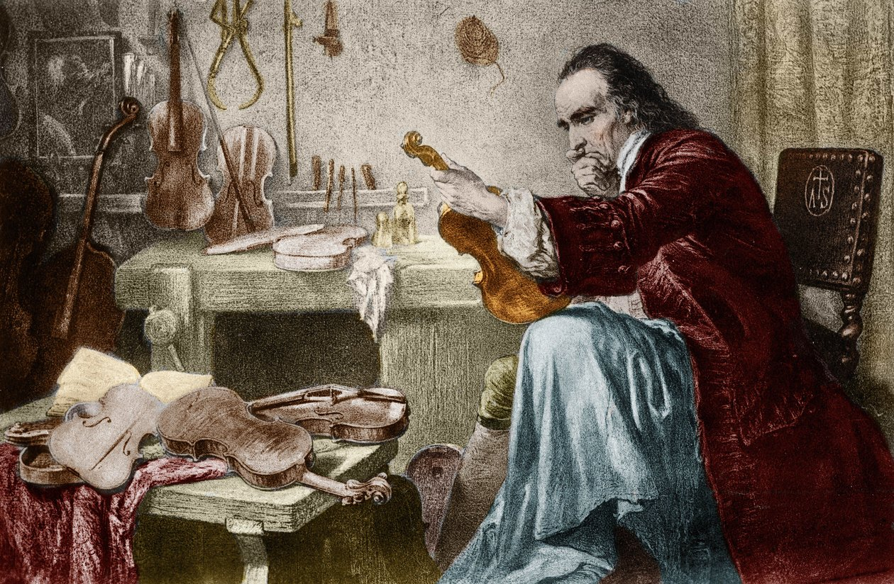
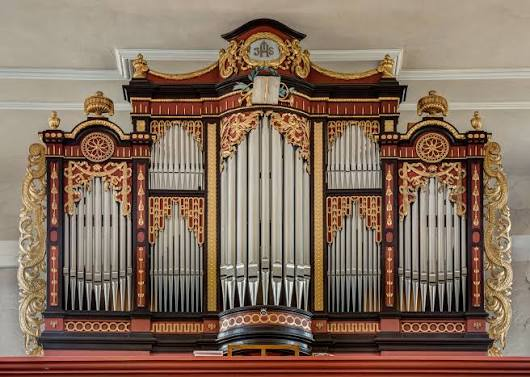
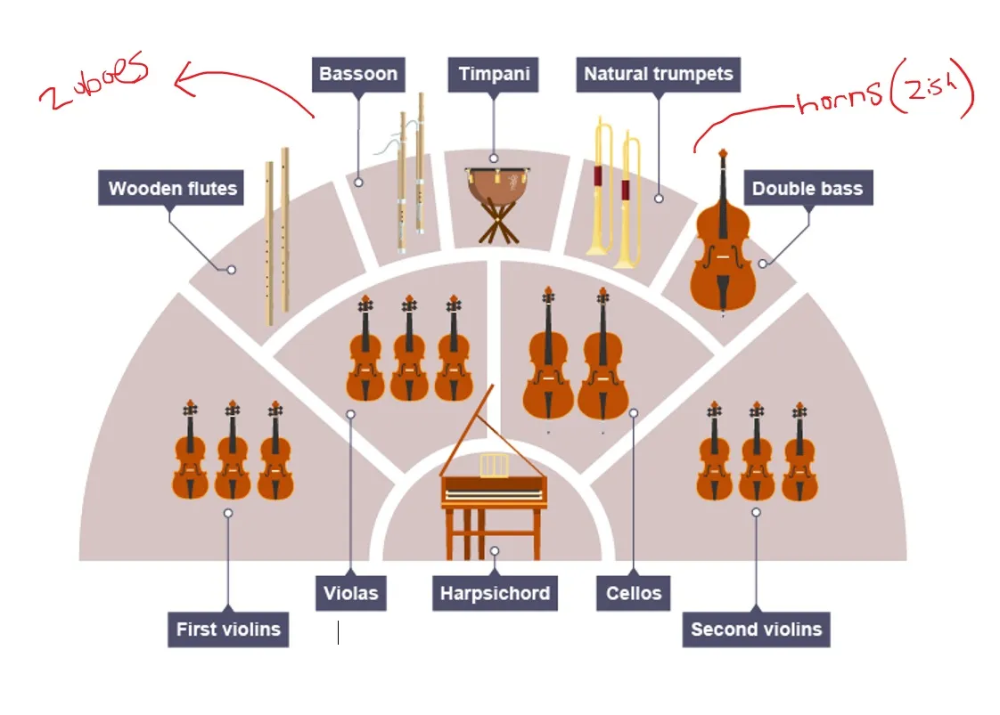

As we have seen, the Baroque period saw a great deal of development in instrumental music, in contrast to the dominance of vocal polyphony during the Renaissance. During the Baroque period, instruments reached a high level of perfection and were already being built in a similar way to those of today. It was the era of the great luthiers (instrument makers), such as the Italian Stradivari, whose stringed instruments, known as Stradivarius, are still considered the finest in the world.

The organ
One instrument that underwent significant development during the Baroque period was the organ, an instrument played with great mastery by composers such as Handel and Bach. Spectacular pipe organs were built in churches and cathedrals. This instrument is played using one or more keyboards, the keys of which open valves so that air generated by a bellows causes the pipes to sound; depending on their shape and size, these pipes produce different timbres. These organs also incorporated a pedalboard for playing the lowest notes (basso continuo) with the feet.

The orchestra in the Baroque period
In the Baroque period, largely thanks to the technical perfection achieved by the bowed string instruments (violin, viola, cello and double bass), the concept of the orchestra as we understand it today emerged. During this period, orchestras were smaller in size compared to those of today. They consisted, essentially, of the string section and the harpsichord, a keyboard instrument that provided chordal support for the basso continuo. However, the Baroque orchestra, particularly in its early days, did not have a fixed set of instruments, but often depended on the number of musicians available.

In addition, depending on the composition, the ensemble included woodwind instruments (flute, oboe and bassoon), brass instruments (trumpets and horns) and percussion (timpani). A typical ensemble consisted of around twenty-five musicians. Unlike modern orchestras, the conductor usually conducted whilst seated and playing the harpsichord.